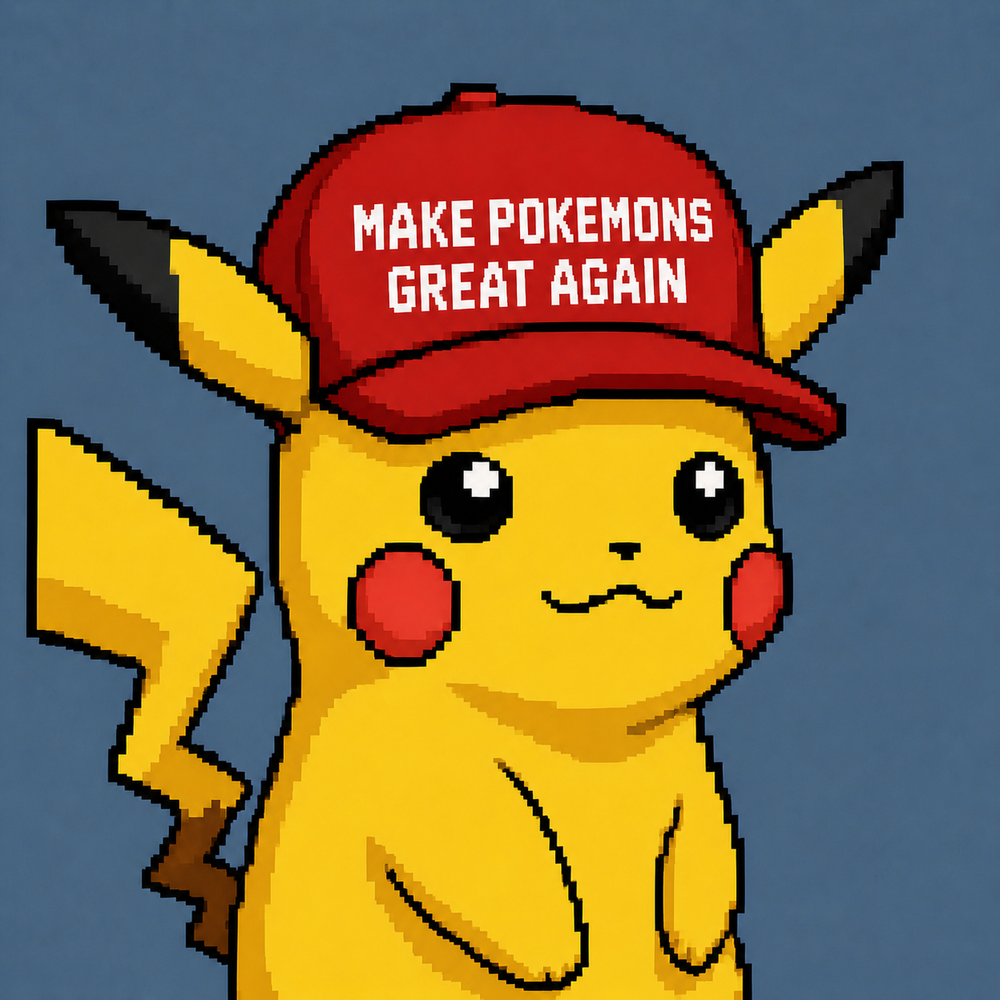

pet first
The page puts PikaCap in motion instead of showing a raw sheet.
PikaCap is waking up
The cap says the whole thing. A yellow pixel mascot, a red slogan, and a tiny digital pet ready to run around the timeline.

original mascot
PikaCap keeps the mascot compact: black-tipped ears, red cheeks, lightning tail, thick outline, and a bright cap with the slogan up front.
the lore
Every mascot gets a moment where people think the story is over. Then one clean pixel signal hits, the cap comes on, and the whole feed starts checking for the next frame.
MPGA is that signal turned into a pet: make it bright again, make it fast again, make it impossible to ignore at 192 by 208.
pet_status --wake-up
sprite atlas: loaded
cap slogan: readable
outline weight: chunky
timeline mood: electric
MPGA mode: onlinethe signal
The mascot is no longer sitting in the folder. PikaCap is live, moving frame by frame, and wearing the loudest cap on the page.
MPGA Broadcast
why it matters
The page puts PikaCap in motion instead of showing a raw sheet.
The slogan is the headline, the cap is the proof, the mascot sells it.
A simple landing page that points everyone to the same signal.